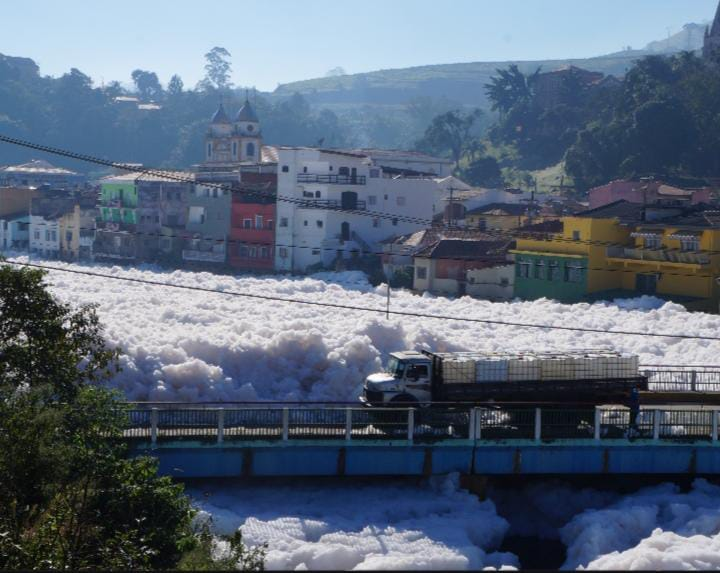
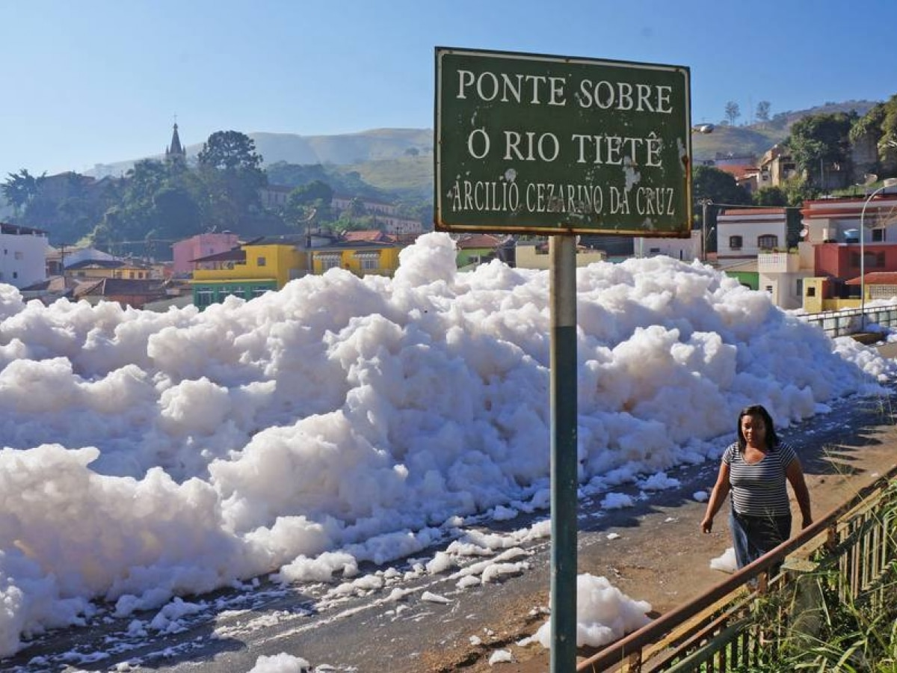

Poluição
A poluição pode ser definida como alterações no ambiente que podem provocar prejuízos aos seres vivos daquele local bem como aos seres humanos e suas atividades econômicas. A poluição pode causar alterações físicas, químicas ou biológicas no meio e pode ser consequência, por exemplo, da ação humana. Existem diferentes tipos de poluição, destacando-se a atmosférica, a da água e a do solo. Apesar de ser fundamental a criação de políticas públicas que garantam a proteção do meio ambiente, todos nós podemos fazer nossa parte para evitar a poluição, reduzindo, por exemplo, o nosso consumo e garantindo o descarte adequado do lixo.
Poluentes por Detergentes
 A maioria dos produtos usados para higiene doméstica é responsável por poluir rios, lagos e mares, salvo os biodegradáveis que não se acumulam na natureza. Começa quando você abre a torneira da pia e começa a lavar a louça, toda aquela espuma característica de detergentes pode parecer bonita naquele momento, mas se torna “horripilante” quando depositada em rios. Como exemplo temos o Rio Tietê, localizado na cidade de São Paulo, você já reparou naquelas densas espumas escuras? Elas são provenientes de detergentes e materiais orgânicos. Os resíduos de sabão sofrem decomposição pelos micro-organismos existentes na água dos rios, sendo assim se tornam biodegradáveis, ou seja, não poluem o meio ambiente. Os detergentes por sua vez se acumulam nos rios formando uma camada de espuma. Na água existem micro-organismos produzindo enzimas capazes de quebrar as moléculas de cadeia carbônica linear que caracterizam os sabões. Essas enzimas não reconhecem as cadeias ramificadas presentes nos detergentes, e por isso eles permanecem na água sem sofrer decomposição, o que ocasiona a poluição. Em geral, os detergentes no Brasil são feitos a partir da mistura de alquil-benzeno- sulfonatos de sódio e recebem a classificação de detergente biodegradável ou não biodegradável. A diferença entre eles começa na cadeia carbônica que os constitui. A cadeia de hidrocarbonetos da molécula não possui nenhuma ramificação, é classificada como linear. Um detergente é considerado não biodegradável se em sua molécula conter ramificações Os detergentes que você usa em casa vão parar em rios através da rede esgoto e são responsáveis pela poluição conhecida como “cisnes-de-detergentes”. O nome é sugestivo, já que são espumas esbranquiçadas e densas que impedem a entrada de gás oxigênio na água, o que afeta as formas aeróbicas aquáticas.
Poluentes
Poluentes são partículas sólidas e gases dispersos no ar atmosférico, na água e no solo, resultantes tanto de atividades humanas como de fenômenos naturais. As principais fontes de poluentes são as indústrias, veículos automotores, queimadas e fenômenos da natureza, tais como vulcanismo e ação dos ventos. São partículas sólidas e gases dispersos no ar atmosférico, na água e no solo, resultantes tanto de atividades humanas como de fenômenos naturais. As principais fontes de poluentes são as indústrias, veículos automotores, queimadas e fenômenos da natureza, tais como vulcanismo e ação dos ventos. Alguns grupos de trabalhadores são mais suscetíveis ao desenvolvimento de doenças associadas a exposição a poluentes no ambiente de trabalho quando comparados com a população em geral
Como o Rio Tietê Ficou Poluído
A poluição do rio Tietê tem relação direta com a superpopulação da cidade de
São Paulo. Ele recebe um volume significativo de esgoto industrial da cidade de Mogi
das Cruzes, localizada a 45 km da nascente. Também recebe o despejo de dejetos urbanos e
industriais da capital.
Boa parte do lixo urbano e industrial da capital de São Paulo é despejada irregularmente
no leito do rio Tietê. Tal prática se popularizou em decorrência da falta de uma rede de
captação de esgoto ao longo do processo de industrialização no Brasil, entre as décadas de
1930 e 1970.Tornou-se comum nesse período direcionar o lixo urbano-industrial para cursos
d’água, especialmente para o Tietê. Essa prática, infelizmente, ainda é comum atualmente

Espuma de Poluição do rio Tietê Invade Ruas de Pirapora do Bom Jesus (SP)
 A espuma da poluição do rio Tietê avança, sobre áreas urbanas de Pirapora do Bom Jesus (54 km de São Paulo). O tráfego de veículos chegou a ser prejudicado. Outras cidades da região de Itu também registraram casos semelhantes. A espuma, além de detergente, tem produtos químicos e pode ser prejudicial à saúde. A espuma se forma quando a água passa pelos vertedouros de uma usina hidrelétrica, localizada a poucos quilômetros de Bom Jesus de Pirapora. De acordo com a Secretaria Estadual do Meio Ambiente, a formação da espuma está relacionada principalmente a baixa vazão da água, a presença de esgotos domésticos não tratados que dificultam a decomposição de detergentes domésticos